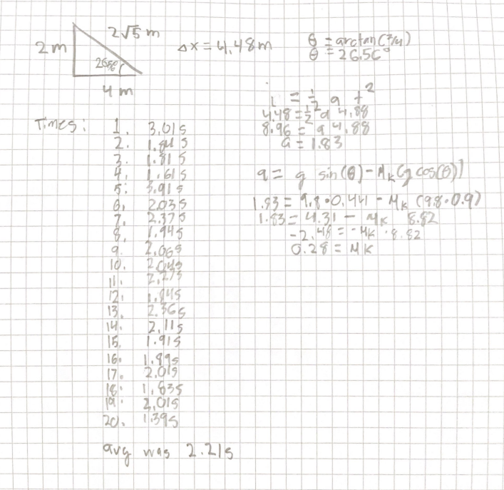

Galileo, Victoria, Alyona, Jackson
1-29-25
(graphics are a work in progress)
The goal of this lab is to learn more about force (Newtons), work (Joules), and power (Watts), and use our knowledge of the three to see how much effort it takes to get up the stairs in terms of caloric content of a peanut and the power emmitted by a lightbulb. We did this by climbing up the stairs ourselves and using infrmation like the dimentions of the stairs and time with the equations W = fd and P = W/t in order to determine how much effort we put in. We then used unit conversions in order to turn it into peanuts and lightbulbs.
I hypothesise that we will use 3 peanuts and 10 seconds of lightbulb per staircase.
After Gali and Jackson went up the stairs a bunch of times(with Gali being much faster obviously)
As seen in the calculations, the final coefficient of kinetic friction was 0.28
Possible errors could include timing with stopwatches which could be fixed by an automatic release system or Tori just getting really lucky. Another main issue could be my release from the top going down on the slide which could also be fixed by the automatic release system. Lastly, the slide was kind of curved which could definetely throw off acceleration and that could be fixed with a new slide.
In conclusion, the slide had a little bit less friction than I expected, but 0.28 compared to my hypothesised 0.4 also seems like a really good balance between going and not hurting yourself. The real world applications of being able to measure coefficient of friction has uses like tires, clothing technology, sports, and as seen by the experiment, slides.